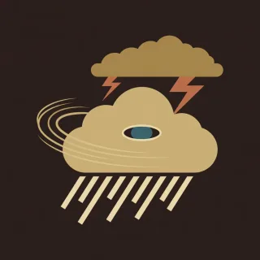

Pieces · handpan piece for D Kurd
Storm front
Six to the bar and it never stops rolling. Wind, rain, thunder, the eye, and thunder again.

- Kind
- Pieces
- Tempo
- 80 BPM
- Time signature
- 6/8
- Length
- 60 bars, about 90 seconds
- Notes used
- D3, A3, B♭3, C4, D4, E4, F4, G4, A4, C5
- Added
- 2026-10-11
Play in AlamutLearn bar by bar
About this pattern
Count 1 2 3 4 5 6. Wind is one wave per bar, up from the bass and back. Rain keeps the wave and makes notes 1, 3, and 5 loud, so you hear three against the two of the bar. Thunder strikes two notes together on 1 and 4. Eye is the quiet middle of the storm, then a run of five notes brings the rain back. Learn Wind, then Rain slowly until the three loud notes sit even.
Notation
Each line is one bar in 6/8. Numbers are the pan's fields, a dot is a rest, brackets hold notes struck together, and × is a tak on the shoulder. Read the number legend below.
Calm
0 . . 4 . .5 . . 4 . .0 . . 6 . 54 . . . . .
Wind
0 4 6 8 6 40 4 6 9 6 42 4 6 8 6 42 5 6 9 6 53 5 7 8 7 53 5 7 9 7 51 5 6 8 6 51 3 5 8 7 5
Rain
0 4 8 4 7 40 4 6 4 5 42 4 6 4 8 42 4 9 4 8 43 5 7 5 9 53 5 8 5 7 51 5 8 5 6 51 3 5 3 4 .
Wind
0 4 6 8 6 40 4 6 9 6 42 4 6 8 6 42 5 6 9 6 53 5 7 8 7 53 5 7 9 7 51 5 6 8 6 51 3 5 8 7 5
Thunder
[08] . . [09] . .[08] 7 6 [05] 6 7[29] . . [27] . .[29] 8 7 [25] 6 7[38] . . [36] . .[38] 7 6 [34] 5 6[18] . 9 8 . 7[09] 8 7 6 5 4
Eye
0 . . . . 8. . 9 . 8 .7 . . 6 . 54 . 5 6 7 8
Rain
0 4 8 4 7 40 4 6 4 5 42 4 6 4 8 42 4 9 4 8 43 5 7 5 9 53 5 8 5 7 51 5 8 5 6 51 3 5 3 4 .
Thunder
[08] . . [09] . .[08] 7 6 [05] 6 7[29] . . [27] . .[29] 8 7 [25] 6 7[38] . . [36] . .[38] 7 6 [34] 5 6[18] . 9 8 . 7[09] 8 7 6 5 4
Clear
0 4 6 8 6 42 4 6 8 . .0 . 4 . 1 .[01] . . . . .
Number legend
0D3 (ding), 146.8 Hz1A3, 220.0 Hz2B♭3, 233.1 Hz3C4, 261.6 Hz4D4, 293.7 Hz5E4, 329.6 Hz6F4, 349.2 Hz7G4, 392.0 Hz8A4, 440.0 Hz9C5, 523.3 Hz×tak, a rim or shoulder tap
طوفان در راه
شش ضرب در میزان و هیچوقت از غلتیدن نمیایستد. باد، باران، تندر، چشم طوفان، و دوباره تندر.
بشمارید ۱ ۲ ۳ ۴ ۵ ۶. «باد» در هر میزان یک موج است، از باس بالا و برگشت. «باران» موج را نگه میدارد و نتهای ۱، ۳ و ۵ را پرصدا میکند، پس سهتایی را در برابر دوتایی میزان میشنوید. «تندر» روی ۱ و ۴ دو نت را همزمان میزند. «چشم طوفان» میانهٔ آرام طوفان است، بعد یک پاساژ پنجنتی باران را برمیگرداند. اول «باد» را یاد بگیرید، بعد «باران» را آرام، تا سه نت پرصدا یکنواخت بنشینند.
More Pieces
Original pieces with named sections, written for this instrument.